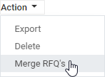
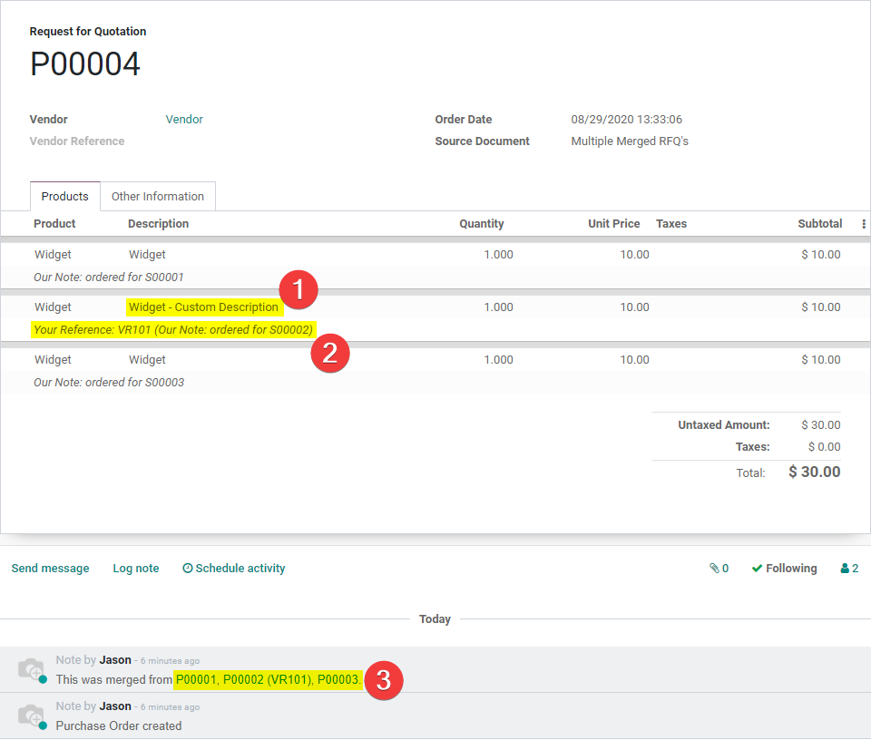

Note: This App is also compatible with Odoo Online
Note: This app may require changes for your particular organization. It has only been tested in databases created with the Country setting of the United States and may need to be localized for other countries. Discuss your requirements with your Odoo Advisor or an Odoo Partner to understand the best way to leverage this kind of functionality.
Merge Purchase Orders
Cancel existing RFQ's, replacing them with a new merged RFQ'
New Option in Action Menu once RFQ's are selected
Warnings if selection contains multiple Vendors, multiple Deliver To locations or confirmed/cancelled PO's

Merged Purchase Order groups line items and refers to old RFQ's
(1) Custom line descriptions. (3) Vendor Reference and/or Note on Sales Order. (3) Source RFQ's accessible via chatter.
